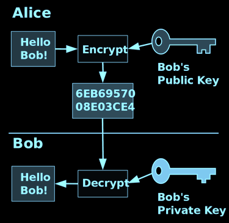

INFORMATION SECURITY: the protection of information from accidental or intentional misuse by people with/outside the organization.
DOWNTIME: the period of time when a system is unavailable/inaccessible.
- No company can be 100%, standard is 99.99% of time (five nines = big names)
Hackers and Malware
HACKERS: experts in technology that use their expertise/knowledge to gain access into a computer network.
- Black hat hackers/White hat hackers
ETHICAL HACKERS (Bug Bounty Programs: crowdsourcing initiative which rewards users for discovering and reporting bugs/vulnerabilities).
Apple = $2 million reward. Paid more = go to black market, criminals pay more. Many types of hackers (in textbook)
MALWARE: any software intended to cause harm, damage, or disable the target.
Protection from Security Threats (2 Lines of Defense)
People
Threats
PERSONALLY IDENTIFIABLE INFORMATION (PII): any data that can identify an individual
INSIDERS: legitimate users who purposely or accidentally misuse their access to information and cause a security incident.
Typically due to grudges; reason why they wait until they let you go; pink slip
SOCIAL ENGINEERING: hackers using their social skills to reveal information of other employees/people.
Could be through phone, email, false/stolen identity, try to convince you
DUMPSTER DIVING: looking through firm/people’s trash.
Protections
INFORMATION SECURITY POLICY: the rules to maintain security (ex. changing password every 30 days, log off before leaving).
INFORMATION SECURITY PLAN: details on how the information security policy will be implemented (what is allowed to be downloaded, password complexity, virus protection, BYOD).
Technology
People: Authentication & Authorization
AUTHENTICATION: confirm user’s identity (ex. user name, password).
AUTHORIZATION: provide users with permissions (ex. access level limits, limit hours…etc.).
* Both methods protect against identity theft through Phishing, Spear Phishing, Pharming (rerouting requests from legitimate sites to fake ones; near impossible to protect yourself from).
SINGLE FACTOR AUTHENTICATION: (username, password), two-factor authentication (username, password + token), multifactor authentication (more than two ways to authenticate, biometric).
SIM Swapping: call provider and pretend to be you with all your info, convince sales-rep, they move their number to your device, steal your number, bypass 2FA; you can lock phone from being ported (lock SIM) to prevent
Data
PRIVELEDGE ESCALATION: hackers grant themselves elevated access to the system (guest account → administrator)
- VERTICAL PRIVILEDGE ESCALATION: attackers grant themselves higher access level to another account (employee → manager → administrator; bottom-to-top)
- HORIZONTAL PRIVILEDGE ESCALATION: attackers grant themselves same access level but to different accounts (employee ←→ employee ←→ employee; steal until done, most common)
Technologies:
- CONTENT FILTERING: when organizations user software to filter content (ex. emails).
- ENCRYPTION: scrambles information into different formats which requires a key/password to decrypt it and bring it back to its original format.
- PUBLIC KEY ENCRYPTION (PKE)

Weakness: can’t ensure it’s real, need to go through separate company to verify
- DIGITAL CERTIFICATE: a file which identifies people/organizations.
- FIREWALL: a software/hardware which guards the company’s network analyzing incoming/outcoming traffic/data.
- ANTIVIRUS
Attacks (Detection & Response)
NETWORK BEHAVIOR ANALYSIS (NBA): a software that collects firm’s computer network traffic patterns to identify unusual/suspicious operations, unknown patterns (looks for an outlier; flags it, but does not stop it).
INTRUSION DETECTION SYSTEM (IDS): a full time monitoring tool to search for known patterns in network traffic to identify intruders. It flags raises an alarm once a threat occurs.
INTRUSION PROTECTION SYSTEM (IPS): a system which block/drop suspiscious traffic flagged by NBA/IDS.
* organizations usually have 2 of these 3
https://haveibeenpwned.com/ - tool to check for data breaches